Notes · Agentic Automation Day 2026
AADay 2026 — Agentic Automation Day 筆記
企業自動化 × Agent：AI Agent 時代 ─ 從工具走向自主協作，企業自動化正在被重新定義
2026 / 8 / 6（四）· 公務人力發展學院 · 12 場議程 · 29 張圖表
議程總覽 · 目錄
議程總覽
2 · Copilot Agentic Workflow（Duran Hsieh）
3 · SDD 自動化（楊騏 Ci）
4 · AI 測試策略（Maya Shavin）
5 · 架構陷阱與紅藍對抗（Fngi）
6 · Cloud Exit 診斷（Eric Ho）
7 · Harness 工程（高見龍）
8 · iSearch 維運（侯詩彥）
9 · GAIA 2.0（Neo）
10 · Agent Governance（Hazel）
11 · Work Agent（Tony Chung）
12 · CIO 大調查（王宏仁）
會後心得 · 行動清單
# AADay 2026 — Agentic Automation Day 筆記
活動：Agentic Automation Day「企業自動化 × Agent」
日期：2026 / 8 / 6（四）
地點：公務人力發展學院
主題：AI Agent 時代 ─ 從工具走向自主協作，企業自動化正在被重新定義
議程總覽
• Opening Remarks — 吳其勳（iThome 總編輯）
• 當 AI 自己醒來工作：GitHub Copilot Agentic Workflow 與 Automations 實戰 — 謝政廷 Duran Hsieh（TSMC Section Manager / GitHub Star）
• 從一張票到一個 PR：用 SDD 把後端團隊的 AI 開發自動化 — 楊騏 Ci（Senior Full Stack Engineer）
• AI can generate tests for you, now what? — Maya Shavin（Salesforce Staff Software Engineer）
• 從 POC 到生產：企業 Agentic Automation 落地的 5 個架構陷阱與紅藍對抗 — 徐方繹 Fngi（APMIC.ai CISO）
• 雲端退場評估自動化：利用 Agent 打造開源儲存架構的診斷探測器 — 何家全 Eric Ho（國泰金控 資深架構師）
• 讓 AI Agent 好好幹活的 Harness 工程 — 高見龍（五倍學院 負責人）
• 規章辦法搜尋平台的自動化維運 — 侯詩彥 James（中國醫藥大學附設醫院 研發工程師）
• AI Agent 上線的最後一哩路：金融業 AgentOps 與權限治理設計 — 林高弘 Neo（國泰世華銀行 技術PM）
• Agent 跑起來之後才是問題的開始：Agent Governance 的工程實踐 — 沈涵羚 Hazel（Red Hat 技術客戶經理）
• 讓 AI 不只回答，更能完成工作：企業 AI 工作流程的落地實務 — 鍾俊芳 Tony Chung（華電聯網 經理）
• 從 CIO 大調查看企業 AI 自動化現況與挑戰 — 王宏仁（iThome 副總編輯）
開場（現場未記錄細節）
iThome 總編輯開場：AI Agent 時代 ─ 從工具走向自主協作，企業自動化正在被重新定義
2. 當 AI 自己醒來工作：GitHub Copilot Agentic Workflow 與 Automations 實戰 — Duran Hsieh
09:00–09:30
演進路徑：agent mode → cloud agent → automation
案例：假設某個 pipeline 掛了，平常沒人會去修；但有了 automation 之後，agent 會自己去維修
DEMO ② Cloud Agent：丟一個 Issue，收一個 PR
流程：開 Issue 指派 → 雲端非同步執行 → 自動開 PR → 你 review 合併
賣點：
你可以去做別的事——甚至下班
PR 是唯一入口，天然的把關點 適合規格明確的開發任務
觀察重點：人從駕駛座退到 review 席
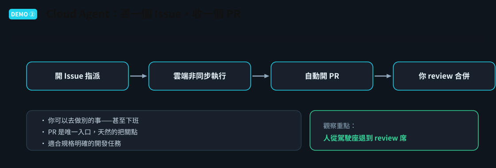
ROADMAP 三階自動化之路
① Agent Mode：互動式 — 你一步步引導，即時對話、逐步確認
② Cloud Agent：委派式 — 丟一個 Issue，它非同步開好 PR
③ Automations：自主式 — 排程與事件觸發，沒有人按下開始鍵
金句：自主程度越高，事前設計就要越重
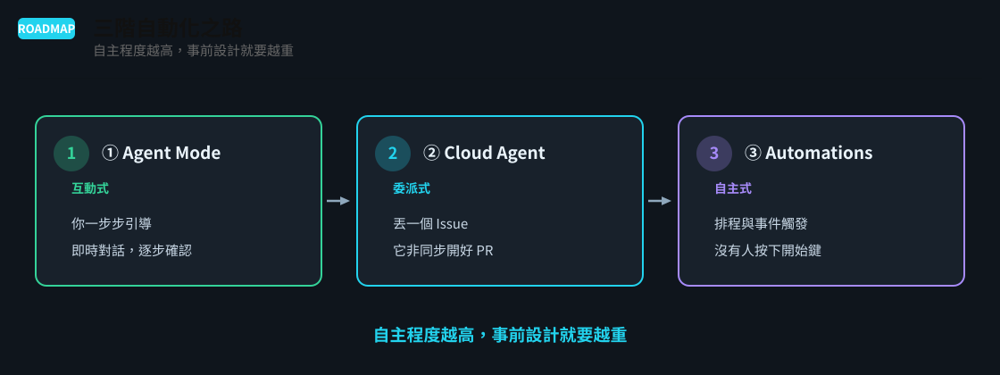
COMPARISON 三階地圖：自主程度怎麼看
① Agent Mode ② Cloud Agent ③ Automation 觸發點 你，即時對話 你，開 Issue 排程／事件，沒有人 人在迴圈 全程盯盤 收 PR 時把關 事後審核 回饋週期 秒級、逐步引導 分鐘～小時，非同步 你要規劃它定期 適合任務 探索、增量重構 規格明確的開發任務 例行性、規則明確 風險等級 低（隨時可控） 中（PR gate） 高（需監控治理）
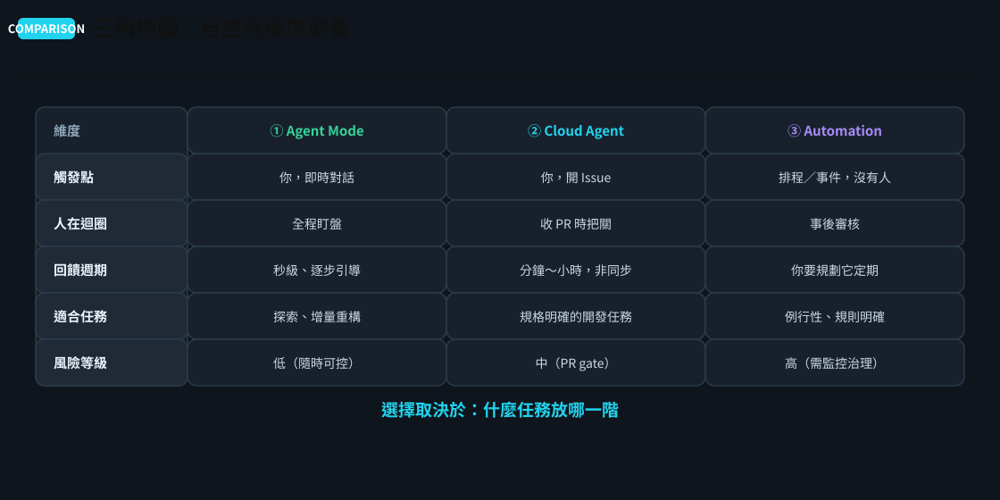
CONCEPT 給 Agent 自主權，但限制影響範圍
✗ 每一步都要人工核准 → 核准疲勞 ：第 1 次仔細看完才按 → 第 20 次瞄一眼就按 → 第 100 次一路 Approve → 審核形同虛設
✓ 隔離環境內，放手讓它做：Codespaces / Dev Container / 沙箱；環境內自主執行不必逐步核准；影響半徑被圈住，出不了沙箱 ；人力留給真正的關口 PR review
重點不是禁止 Agent 動手 — 是「足夠的自主權 × 受控的影響範圍」
放飛自我的慘案，問題都不在自主，而在沒有邊界
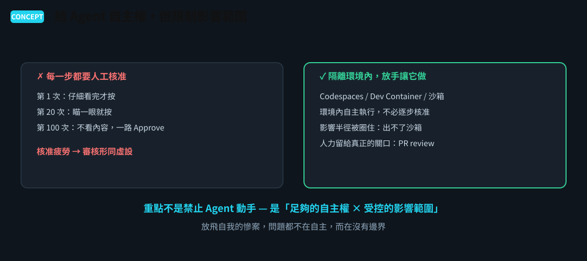
心得（Yuga）
封閉環境很重要：企業落地一定要在封閉環境開發驗證完，最後只有可交付的東西可以進 production
GitHub Actions / Workflow 現在可以把 YAML 和自然語言寫在一起
反思：什麼都自動化了，人還要做什麼？→ 不是只 review spec，而是三端：事前（決定自動化什麼、畫邊界、定義驗收標準）、事中（例外升級路徑）、事後（審核=檢查失敗後果是否可控＋問責）。真正的瓶頸轉移：spec 以前可以含糊，現在 agent 會照做 →「寫得出 agent 不會誤解的 spec」變成稀缺技能
反思：把專案金三角 套用在 mode 選擇 — 高品質 / 高度依賴 domain knowledge 的任務 → 用 agent mode 來回；例行型任務 → automation / agentic workflow。成本角可以獨立調整：cache、換便宜模型、簡單判斷用小型 local 模型 跑就好
反思：可觀測性的關鍵問題 — agent 的 session / 執行記錄存在執行者自己的電腦 （local），發生事情時大家需要知道發生什麼 → 需要事件主動外送（異常報告書、告警），不能等別人去翻那台機器
SCALE 三者都能參與 SDLC，能常駐的只有一種
SDLC 六階段：規格 → 開發 → 測試 → 建置 → 部署 → 維運
Agent Mode：上限 = 你的注意力 ；點 — 召喚一次做一件事，做完就結束
Coding Agent：上限 = 你開 issue 的速度 ；多點平行 — 一次多張 issue，但每點仍要人發起
Agentic Workflow：上限 = 你的預算 ；線 — 專家 Agent 常駐每個環節，事件與排程喚醒
類比：手動 build → build server → CI/CD 常駐 ⇒ 這就是 Continuous AI：AI 任務的 CI/CD
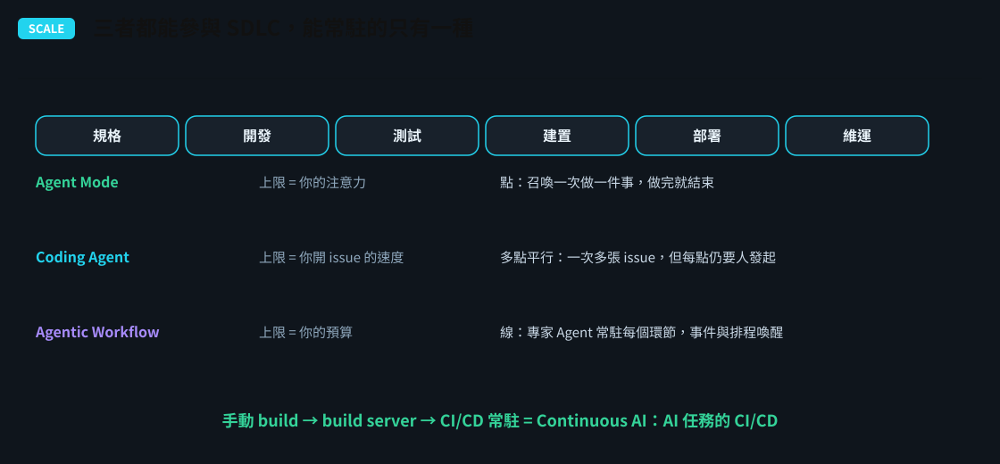
GOVERNANCE 上線前，最該在意的四件事
🔒 最小權限：獨立身分，限縮 scope；每人一准 PR （每次核准只授權一個 PR）
🛡️ Prompt injection 防護：外部輸入視為不可信；限制讀取來源與權限
👤 人類把關：匯出經 review 才合併；高風險操作設 approval gate
👁️ 可觀測性：每次執行可追溯；異常觸發報告書
主軸：事前防 → 事中控 → 事後查
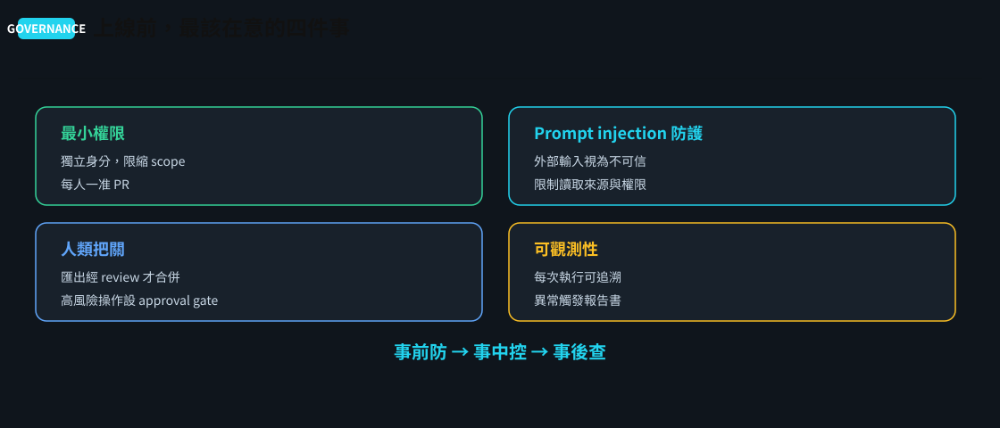
3. 從一張票到一個 PR：用 SDD 把後端團隊的 AI 開發自動化 — 楊騏 Ci
09:45–10:15
背景（官網摘要）
問題：多數團隊用 AI 寫 code 停在「IDE 補一段」— AI 很會補，但接不了「一張票進來 → 一個 PR 出去」整條工作
解法：作者自製 SDD（Spec-Driven Development）工具 prospec — 一張票進來 → 長出規格 → 拆計畫 → 實作 → review，每一步都有明確產出和驗收
落地：前一份工作的後端團隊完整跑數個月，接 GitHub Action 自動化 — AI 自己從 Jira 領票、跑完整條 SDD、交回結果，無人值守
三個 takeaways：① SDD 是關鍵（不是 prompt 寫得好，是流程切成有明確產出/驗收的步驟）② 無人值守管線（GitHub Action + Jira）怎麼設計、失敗怎麼接住 ③ 哪些環節放心交給 Agent、哪些留人把關
適聽：工程師、研發主管、平台團隊
現場筆記
文件要先寫好；spec 要可迭代
產品規格隨時可能變動 → 技術規格也要跟著迭代，後續 harness 才能準確執行寫好程式
建立專案知識庫（llm-wiki） — 讓 agent 執行時有專案脈絡（架構、慣例）可參考
4. AI can generate tests for you, now what? — Maya Shavin
10:30–11:00
背景（官網摘要）
現況：Playwright MCP / Claude Code 可以幫你生成測試；Cursor 幾秒內給出合理的測試建議 — testing 從沒這麼簡單過
問題來了：直到你需要一套 full-scale、無縫的測試策略 — 生成出來的測試真的符合你的標準嗎？看起來再好也要質疑
作為 lead engineer：怎麼在 testing quadrants 之間平衡？怎麼設計 scalable 的測試架構？
重點：combine AI tools 架出 scalable AI-driven testing workflow，同時仍然 fully own 團隊的 code quality
現場筆記
測試陷阱：更多的測試 ≠ 信心 （More Tests !== Better Confidence）
信心公式：Confidence = knowing WHICH risks, HOW to verify & WHEN verification should run
AI 很會產生測試 → 其實沒太多幫助（因為缺的是風險判斷，不是測試數量）
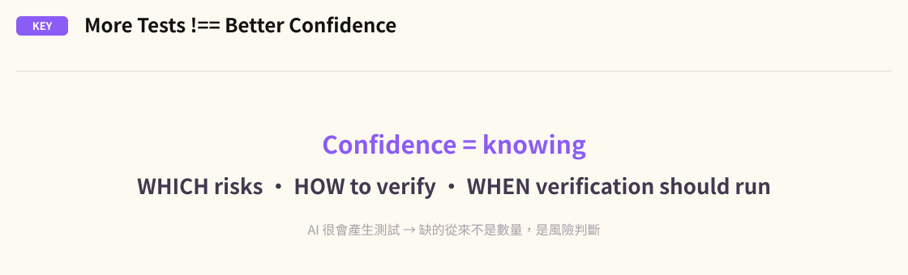
Potential Validations（先列驗證點，再決定放哪）
範例（search feature）：Filters posts by title/tag；Clears when query is empty；No results state；Keyboard navigation works；Search stays responsive；Screen reader announces updates；Typo/fuzzy search behavior
Agile Testing Quadrants（2×2）
縱軸：Business Facing ↑ / Technology Facing ↓；橫軸：Supporting the Team ← / Critique the Product →
Q1 Unit/Component — Automated
Q2 Acceptance — Automated & Manual
Q3 Exploratory — Manual
Q4 Quality — Tools（效能、非功能）
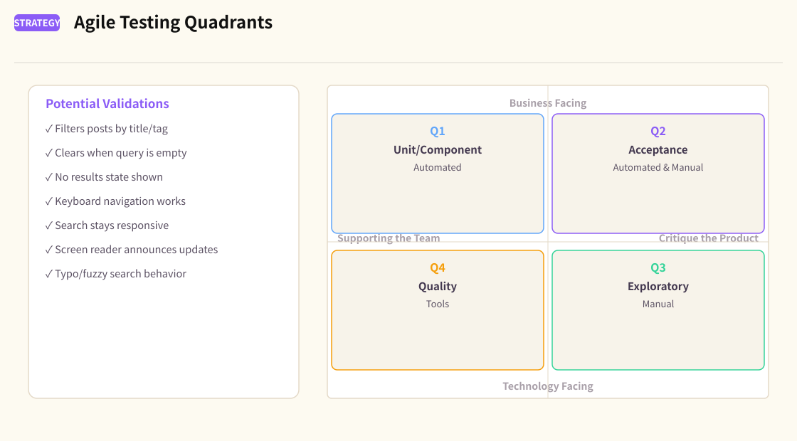
心得（Yuga）
講者簡報很有自己的風格：雖然也是 AI 生出來的，但很有識別度 — 水彩風＋手寫字＋固定角色元素（robot、plant、mug、paper plane）＋簽名式 @mayashavin，像一套品牌系統
反思：AI implement + AI generate test 很容易「球員兼裁判」 — 測試驗證的是實作自己的假設；所以驗證策略（WHICH/HOW/WHEN）必須由人定義，才有獨立性
AI Test 五步工作流
• Feature — FEATURE DOC：Product requirements / Context / Constraints
• AI suggests — 生成 Scenarios / Possible quadrants / Validation ideas
• Engineers decide — What matters / Priorities / Validation strategy / What not to automate
• AI implements — Tests / Checks / Automation / Monitoring
• Continuous validation & feedback — CI gates / Monitoring / Learnings
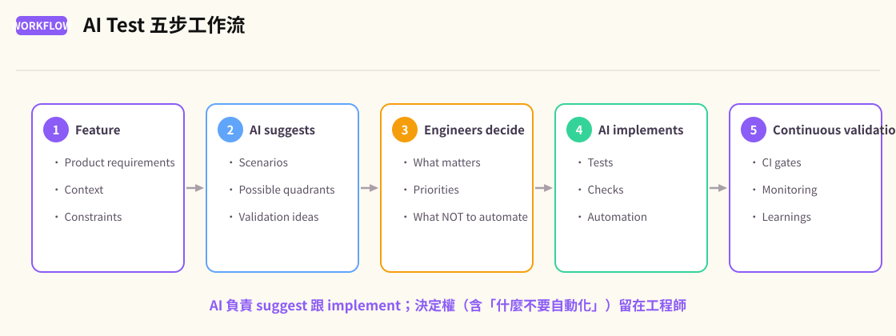
Scaling the Testing Model Workflow（Team Level，由下往上堆疊）
• Shared strategy template — 團隊共用一份測試策略範本
• AI-assisted execution — 工程師在既定策略內用 AI 生成/執行測試
• Repo testing rules — repo 規則確保一致性、對齊標準
• Review checklist — 合併前 checklist 確保 review 完整
• CI gates — merge 前自動把關品質
• Metrics + learning loop — 指標驅動可見性與持續學習
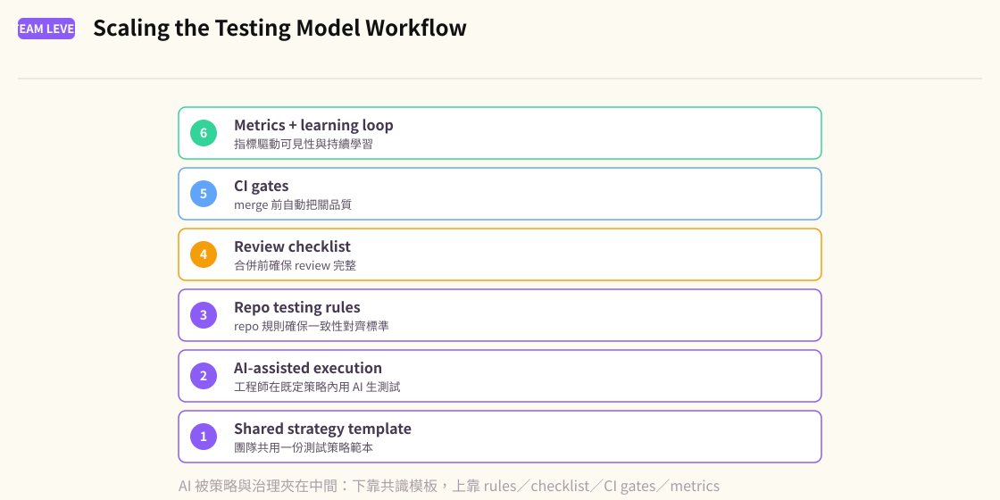
總結句
Better confidence comes from strategy, not just more tests — 用 AI 寫 scenarios 可以，但策略才是信心來源
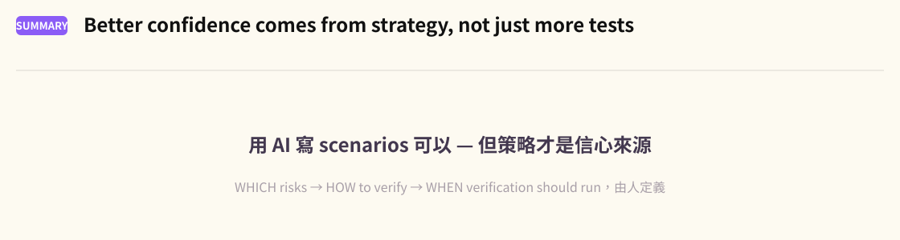
5. 從 POC 到生產：企業 Agentic Automation 落地的 5 個架構陷阱與紅藍對抗 — Fngi
11:15–11:45
背景（官網摘要）
鴻溝：「能 demo」與「能上線」差很遠 ；多數團隊只做到「把 LLM 串到 API」
Agent 一旦有自主決策權、工具調用權、跨系統協作權 → 傳統應用安全、資料治理、Ops 監控思維幾乎全部失效
內容：不講 LLM 基礎 / Prompt 工程；以金融、製造業企業客戶部署的第一手顧問經驗，揭露 5 個 POC 看不見、上線後造成事故的架構陷阱
附：可帶回組織的「企業 Agentic 風險自評清單」
框架：三個「權」，擊垮三套舊思維
自主決策權 → Ops 監控失效（每次執行軌跡都不同）工具調用權 → 應用安全失效（讓進來的內容驅動行動）跨系統協作權 → 資料治理失效（身分與記憶跨邊界）五個陷阱一一對上這三權三失效；POC 都看不見，因為 POC 天生繞過它們
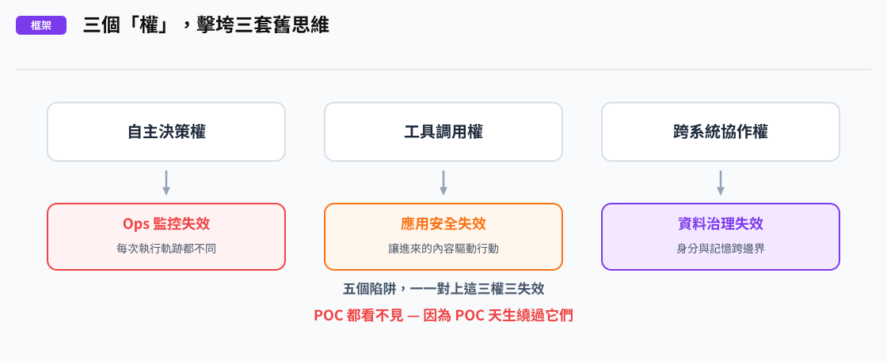
解剖對象：OpenClaw（真實開源 Agent 框架）
為什麼選它：① 架構跟大多數企業自己搭的 Agent stack 幾乎一樣 ② 學術界已對它做了一整批攻擊研究 — 紅隊是有人真的打穿過的
今天不講：LLM 基礎、prompt 工程（model 層）；今天講：架構層
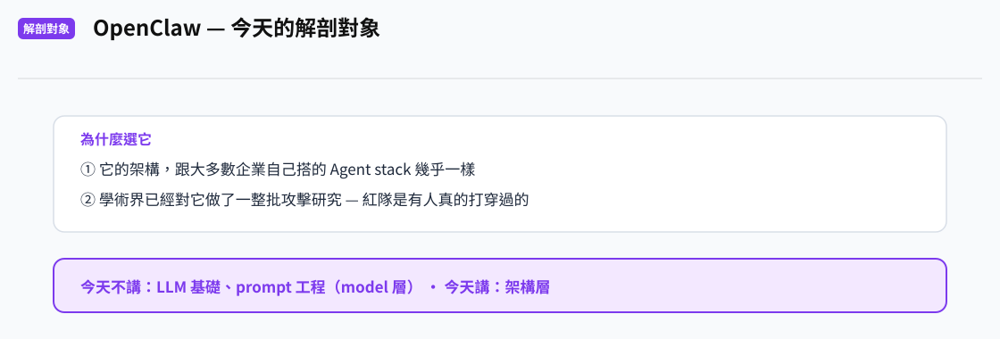
現場筆記
主軸：各自使用/開發的 harness 在架構面上的 security — 風險集中在 harness（框架層），不是 model 層
攻擊手法：email 裡可能塞白色的字 （HTML 白字白底／隱形文字）隱含攻擊指令 — 人看不見，但 agent 解析 raw content 時會讀到
觀點：prompt injection 擋不完 （input 層無法根絕）→ 應該在 agent 裡擋 （架構層防禦：sandbox、最小權限、untrusted content 標記、敏感動作需人確認）
問題：沒設定目標 → agent 可能無限跑下去 — production 環境能否馬上停掉 ？（runaway agent：需終止條件 / max iterations / budget caps / kill switch）
6. 雲端退場評估自動化：利用 Agent 打造開源儲存架構的診斷探測器 — Eric Ho
12:00–12:30
背景（官網摘要）
動機：雲端稅壓力 → Cloud Exit；最痛的不是數據搬遷，是預判藏在動態 API 調用與資產依賴中的「架構鴻溝」
新範式：「架構反序列化」 — 具自主驗證能力的 AI Agent 對企業儲存日誌做高維度分解；不靠過時文件，用 RAG 串最新開源社群動態，自動映射 AWS S3 ↔ 地端開源儲存方案的相容性矩陣
診斷重點：「生命週期管理」與「冷熱儲存轉換」在異質架構下的效能偏移與成本陷阱；用模擬容器動態驗證，遷移前揭露隱性風險（例：Glacier 轉換策略在地端硬體規劃的錯位 ）
應用：自動化評估 S3 Policy 合規性、預警事件驅動管線搬遷後失效風險；目標「基礎設施中立」、數據主權回歸
三大收穫：① Cloud Exit 隱形成本與 ROI 陷阱（避免百萬級預算浪費）② 架構反序列化健檢方法論（API 日誌 → Agent 自動梳理真實依賴）③ 兩個月可落地的 PoC 藍圖（輕量 RAG + 相容性知識庫、prompt 護欄防幻覺、產出硬體配置與轉移風險報告）
方法論：把專家的調查方法變成可重複的工程系統
過去依靠資深專家反覆調查 → 不取代專家，而是把專家的調查方法工程化
六步流程：訪談（目標）→ 盤點（設定）→ 觀察（紀錄）→ 查證（文件）→ 實驗（沙盒）→ 判斷（建議）
回饋迴圈：「新證據！」→ 補資料、換方向、重新測試（從判斷回捲到盤點）
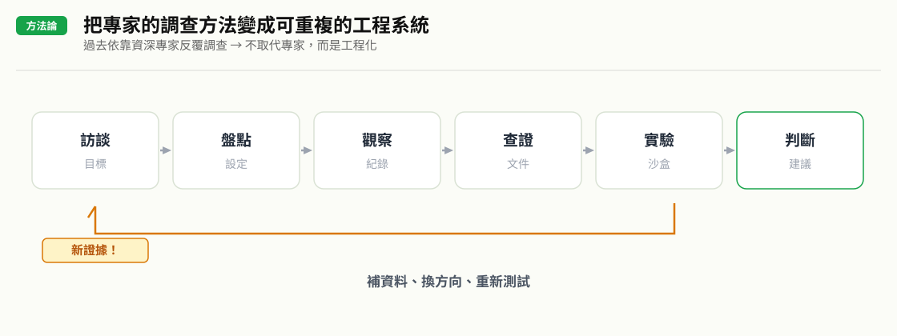
背景篇：S3 退場風險，經常在搬完後才出現
金句：資料搬得走，不代表架構退得出去
AWS S3 → S3 替代方案，資料搬出後的衍生問題 ：功能失效／效能退化／硬體錯配／ROI 高估
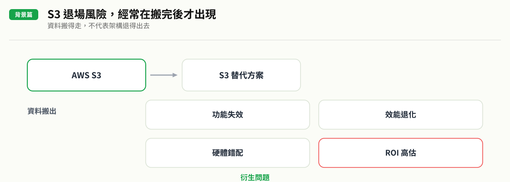
Cloud Exit 必須拆解整套雲端相依關係
雲環境 = 維運／運算／資料／整合／安全 五層；S3 是核心但被四周隱性依賴包圍
重點：從 Evidence（日誌）找出隱性雲端依賴 — 高影響、高耦合、高驗證！
方法篇：三代流程圖 — 是誰控制下一步
副標：Agentic Investigation + Deterministic Facts + Human Decision （agentic 調查、確定性事實、人做決策）
Deterministic Non-Agentic Agentic 流程下一步 程式碼 程式碼 Agent + Guardrails *未知情境處理性 低 中 高 可重現性 高 中高 依賴檢查稽核 代價缺陷 覆蓋不足 路徑固定 不確定性高
圖例：藍 = 固定執行單元；黃 = LLM 相關執行單元（Agentic 有分支決策）
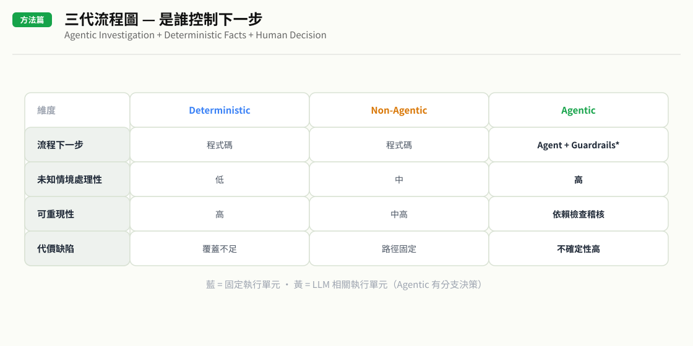
方法論篇：ExitLens 是 Agent 與 Human 的持續決策循環
Evidence 與 Decision 讓兩個責任環閉合 無限迴圈（∞）雙環：
Agentic Investigation（綠）：Plan → Act → Observe → Evaluate
Human Decision（藍）：Review → Decide → Adjust → Feedback
Agent 產出 Evidence 餵給人；人的 Decision 餵回 Agent — 兩環互鎖，持續迭代
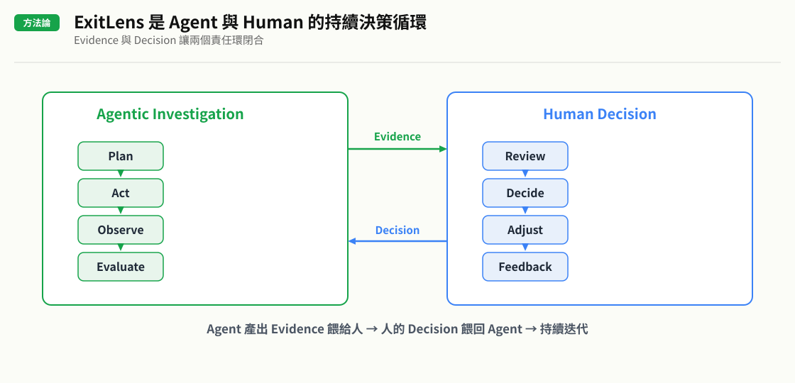
方法論篇：Agent 協助決策者，然後呢？
Evaluate 決定下一步：繼續調查、等待 Human、或結束診斷
流程：01 Goal（S3選出）→ 02 Plan（依照證據規劃）→ 03 Act（選擇工具執行）→ 04 Observe（觀察紀錄發現）→ 05 Evaluate（評估證據結果）
Evaluate 三分支：
I Re-plan — 繼續調查證據（回捲 Plan）II Human Act — 回饋恢復流程（等/交給人）III Complete — 輸出對應報告
flowchart LR
A[01 Goal<br/>S3 選出] --> B[02 Plan<br/>依照證據規劃]
B --> C[03 Act<br/>選擇工具執行]
C --> D[04 Observe<br/>觀察紀錄發現]
D --> E[05 Evaluate<br/>評估證據結果]
E -->|I Re-plan| B
E -->|II Human Act| F[人介入]
E -->|III Complete| G[輸出報告]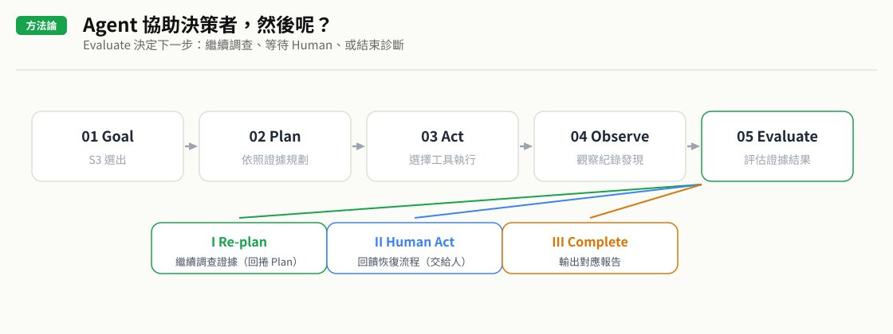
7. 讓 AI Agent 好好幹活的 Harness 工程 — 高見龍
13:20–13:50
背景（官網摘要）
問題：多數人把 Claude Code、Codex 當黑盒子 用 — 下了 prompt 不知道裡面怎麼運作，用久了發現它常常改錯地方
論點：問題往往不是模型不夠力，而是驅動它的那層 Harness 沒被認真看待 → 把 Agent 當成可以動手的工程對象
內容：
理解 Harness 是怎麼回事
作者自製 SDD 工具 Spectra — 把工作拆成有結構、可追溯的 spec 與 change
寫了終端機把 CLI 包起來 — Agent 在跑什麼、該不該停都看得見、管得住
讓 Agent 產出可信成果的方法論；執行過程看得見也管得住
討論：AI 產的 code 敢用嗎？你多久沒有看 AI 的 code？
講者的反問：很多人用 AI 寫 code 一陣子後就停止 review — 信任漂移 ：第一天看每一行，第 N 天直接 merge（= Session 2 核准疲勞的 code review 版）
「敢用」的條件不是 code 品質，是有沒有能力驗證 ：測試、diff review、可回滾 — 敢用 = 有 safety net，不是盲目信任
Harness 的責任：把 change 縮小到人 review 得完的顆粒度 （Spectra/prospec 拆成 spec + change 的目的）
心得（Yuga）
AI Agent 其實就在做原本軟體開發週期本來就會做的事情 — 沒有發明新流程，是把既有 SDLC 步驟（spec→開發→測試→部署→維運）自動化＋結構化；所以 harness 的目標不是新東西，是把舊流程變看得見、管得住
反思：人常常連話都講不清楚，AI 只是在猜你的意圖 — 當執行 fidelity 提高，瓶頸回到人：把意圖講清楚本來就是最難的 engineering；以前 code review 會兜住含糊，現在 agent 照字面執行，含糊直接變 bug
觀點：講者不想靠框架，只靠 45 line prompt 定義「提案 → 實作 → 歸檔」流程其實也可以做 — 真正要解決的問題不變：框架只是載體，流程結構化才是重點
講者的工具：Spectra（github.com/kaochenlong/spectra-app，680★）
SDD 桌面 App，相容 OpenSpec （Fission-AI）資料格式 — 完整生命週期：提案 change → 寫 spec → 追蹤 tasks → 歸檔
Claude Code 整合 skills：/spectra-discuss、/spectra-propose、/spectra-apply、/spectra-ingest、/spectra-archive、/spectra-debug（max 3 attempts 系統性除錯）、/spectra-ask（RAG 查 spec）
特色：⌘D Compact Mode 浮動視窗監看進度；Park 機制 暫存 WIP 不污染 git；Git Worktree 每個 change 獨立目錄（spx/<name>）；[P] 任務並行（Claude Code subagents，實驗性）
RAG 全文/自然語言搜尋：支援繁中，需 Apple Silicon 或 Windows
使用 Spectra 前後的差別（流程對照）
目標：Spectra 介入原本流程，讓 Plan、實作與規格保持一致
一般流程：Plan Mode → 建立 Plan → 執行 → 完成（直線，無中間檢查）
Spectra 流程：Plan Mode → 建立 Plan → /spectra-discuss 討論需求 → /spectra-propose 提案 → parked 審閱 → /spectra-apply 執行 → 調整？ （無 → /spectra-archive 歸檔 → 完成；有 → /spectra-ingest 同步規格 → 回捲）
關鍵：多出來的環節都是同步點 — 討論、提案、審閱、調整回捲（ingest 把實作變更同步回 spec），確保規格不跟現實脫節
心得（Yuga）
講者是真的把 SDD tune 好，然後自己開發產品拿去賣 — Spectra 就是用 SDD 流程 dogfood 出來的產品：不是賣概念的顧問，是賣自己流程產物的 maker — 最強的可信度證明
啟發：感覺我也可以走一樣的方式 — 把 agent 開發流程 tune 順手 → 用它做出產品 → 拿去賣（自己的 GSD/Hermes 流程資產就是起點）
8. 規章辦法搜尋平台的自動化維運 — 侯詩彥 James
14:05–14:35
背景（官網摘要）
案例：中國醫藥大學附設醫院 iSearch 院內規章搜尋平台 — 串接內部文件庫、向量資料庫，LLM 生成回覆
核心觀點：真正的挑戰不是上線，是上線後的持續維運 — 資料定期更新、品質持續監控、異常即時察覺
自動化維運框架涵蓋：向量資料庫自動同步、月統計報告自動產出、每日異常監控、自動部署、自動化評估、自動排查與修復錯誤
技術分類：Autonomous Agents / Agentic Workflows / Agentic Engineering
現場未記錄（與 Session 11 知識中樞概念互補：iSearch = L1 Knowledge Foundation 的醫院實例；Session 11「可查/可驗/可控」三要求正好對應 iSearch 的維運重點）
9. AI Agent 上線的最後一哩路：金融業 AgentOps 與權限治理設計 — Neo
14:50–15:20
背景（官網摘要）
案例：國泰銀行 GAIA 2.0 企業級 Agent 管理平台 — 目標不是做單一 Agent，是讓多個團隊安全開發、部署、申請使用、維運、下架 Agent 的共通平台能力
三個核心問題：
• AgentOps 生命週期 ：上架 → 申請使用 → 更版 → 停用 → 下架；整合既有 CI/CD、行政申請、資安審核、維運責任（不是單純部署自動化）
• 權限與安全邊界 ：區分 Agent 自身權限 （系統角色，固定任務）vs 使用者委派權限 （代表使用者執行 → 依使用者權限，避免權限放大）
• Agent Gateway 治理中樞 ：集中權限檢查、路由、執行紀錄 — 避免多 Agent 點對點串接的權限分散/稽核困難
平台三核心：Workspace （團隊隔離邊界）／Marketplace （工具、MCP Server、Agent 能力重用）／Gateway （治理中樞）
三大挑戰：上線流程分散難追蹤、權限邊界難定義、工具整合變點對點災難
金融業落地關鍵：能安全上線、正確授權、持續監控、異常或停用時能下架
現場筆記：當規模放大 — 多團隊並進的企業級災難
想像金融業：客服要做 Agent、法遵要做、理專也要做 — 每個團隊都自己硬刻會發生什麼？
• 點對點串接災難 ：重複造輪子、網路變蜘蛛網、無法統一管理
• 權限與稽核標準不一 ：A 團隊嚴格、B 團隊有漏洞 → 資安破口
• 上線與維運混亂 ：缺乏統一發布機制、故障時難釐清責任
結論：企業導入 AI Agent 的真正瓶頸，從來不是 PoC 做不出來，而是「多團隊規模化 (Scale up)」時的失控
這就是為什麼我們需要 GAIA 2.0
金融業場景中，Agent 一旦開始呼叫工具或存取企業資料，就必須被收斂至具備合規、稽核與風險控管的標準化治理框架
心得（Yuga）
TSMC 應該也需要這個 — 多 BU、多團隊、半導體資安規範，跟金融業一樣會遇到「多團隊規模化失控」；Duran 講的 Copilot 導入（工具層）正好需要 GAIA 這種平台層治理來兜底
設計企業級 Agent 管理的三大挑戰
• 上線流程分散 ：多層次的 Agent Mesh 帶來相依性災難 → 必須將 Agent 視為資產，導入 AgentOps 生命週期
• 權限邊界模糊 ：越權存取與身份混淆 → 必須明確區分 Agent 自身權限 與 使用者委派權限
• 點對點整合災難 ：網路拓撲與稽核混亂 → 必須透過 Agent Gateway 統一集中治理路徑
挑戰一展開：多層次 Agent 系統的相依性災難
• 網狀依賴 ：Agentic System 是多層「多對多」網狀架構（Agent Mesh）
• 向下呼叫 ：Parent Agent 執行任務時常呼叫多個 Sub-Agent 或 MCP
• 重用風險 ：一個好用的 Sub-Agent（例：客戶 KYC 查詢小助手）可能被多個部門同時依賴
• 連鎖癱瘓 ：共用節點更版／API 廢棄被迫下架時，無完善管理機制 → 連鎖反應，上游 Agent 瞬間停擺
AgentOps 解法：Agent 與 MCP 的「資產化」生命週期
為解決相依性災難，GAIA 2.0 把 Agent 與 MCP 視為獨立資產 (Asset) ，導入訂閱制 生命週期：
• 上架發布 (Publish) ：能力規格＋權限要求註冊進內部 Marketplace，供全行檢索
• 申請授權 (Subscribe) ：其他 Agent 不得私下串接 ，必須透過平台發起訂閱與權限審批
• 版本控管 (Versioning) ：多版本並存，更新不強制覆蓋，給呼叫端測試遷移緩衝期
• 安全下架 (Deprecation) ：下架前平台主動分析依賴關係 、強制通知與依賴解除，平滑下線
金融業職責分離：明確的權責邊界（SoD）
配合生命週期，金融業嚴格落實職責分離 — GAIA 2.0 中三種角色清晰邊界：
• 提供方 Provider（開發與維護者） ：實作 Sub-Agent/MCP、維護版本更新、決定是否同意存取申請、承擔服務品質與乘載量
• 需求方 Consumer（代理與使用者） ：Marketplace 找工具發起訂閱；提供方發新版時主動升級 Parent Agent 依賴版本並做回歸測試
• 平台方 Governance（合規與監控者） ：上架前資安掃描＋規格合規審核、監控全域流量與相依性拓撲、異常時迅速釐清責任歸屬
心得（Yuga）
GAIA 2.0 看起來就是 agent / skill / MCP 的 marketplace，執行在雲端 — 架構上跟自己家的 Hermes 生態（skills＋MCP＋cron＋profiles）同構，差別在 GAIA 是多團隊＋SoD 治理，個人版不需要
挑戰二：釐清 Agent 的雙重身份與越權風險
系統自身權限 (M2M) ：Agent 作為系統角色的基礎權限 — 可呼叫哪些工具、連接哪些服務、執行哪些固定自動化任務；適用明確、與使用者登入身份無關的後台任務（例：定時爬取市場新聞）使用者委派權限 (User Delegation) ：Agent 代表「當下操作的使用者」執行 — 嚴格依使用者本身權限決定可看的機敏資料與操作；核心防護：使用者不能做的交易，Agent 絕對不能代做，避免權限放大 治理的五個靈魂拷問 ：代表誰？呼叫誰？看什麼？誰審核？如何防越權？
挑戰二（技術面）：落實節點間的 Zero Trust 檢核
不能只在「大門口（使用者登入）」檢查一次 — 每一段呼叫 (Every Hop) 都要卡控 ：User → Agent → Sub-Agent → MCP，每個箭頭都強制權限卡控與身份傳遞
身份憑證傳遞 ：準確傳遞原始使用者 Token 與 Agent 身份，後端才能辨識「是誰在要求資料」Gateway 核心價值 ：即使不用 GAIA 企業也必須自建；GAIA Gateway 集中攔截節點間請求，避免各團隊漏寫權限驗證
挑戰二（行政面）：Marketplace 分級權限審查
誰有資格「點頭同意」Agent 串接工具？→ 依據操作行為 × 資料機敏度 雙維度矩陣，避免一刀切死胡同：
操作\資料 公開 Public 內部 Internal 機敏 PII/財務 Read（查詢） 系統自動授權 L1 單位主管簽核（業務關聯性） L2 資安＋法遵雙核（控資料流向） Write/Execute（寫入/執行） L1 主管簽核（執行範圍） L2 高階簽核＋風險評估 最高權限簽核＋強制 Human-In-the-Loop
挑戰三（痛點）：企業內部的 Full Mesh 點對點災難
數十個開發單位散在不同部門，都要互相呼叫彼此的 Agent/MCP → 開發者噩夢：
• 找不到 (Service Discovery) ：不知道別部門有好工具，重複造輪子
• 連不到 (Network & Routing) ：各自提網路單、開防火牆，規則變一團亂麻
• 接不起來 (Auth & Security) ：Token/憑證規格不統一，對接邏輯全靠硬刻
四大災難 ：權限分散、路由混亂、稽核困難、維運成本上升
挑戰三（解法）：Marketplace 與 Gateway 樞紐化治理
GAIA 2.0 把混亂的 Full Mesh 轉成 Hub-and-Spoke（樞紐與分支） ：
Marketplace 解決「發現與重用」 ：內部市集讓各部門搜尋、申請訂閱既有工具，打破資訊孤島、消滅重複造輪子Gateway 解決「連線與權控」 ：不再點對點連線，所有請求統一打進 Gateway — 單一網路設定、統一權控與憑證機制核心價值：Gateway 絕對不是單純轉發流量！ 是權限檢查、路由管理、紀錄的控制點 — 把合規成本留在平台層，把開發速度還給業務團隊
不只是 API Gateway：Agent 獨有的架構挑戰
路由與權限控管看似微服務的常規問題，但 Agentic System 要求 Gateway 有更深層的認知與管控能力 ：
• 動態與非確定性路由 ：傳統 API 路徑固定；Agent 動態選工具、執行路徑無法預測、可能多層呼叫
• 複雜的身份委派機制 ：呼叫可能代表系統自身或不同使用者 — Gateway 必須動態解析並切換權限邊界
• 深度的 Context 治理 ：傳統檢查 Header；Agent Gateway 必須防堵對話上下文中的機敏資料外洩與 Prompt Injection
• 決策行為的稽核與追蹤 ：金融合規不能只留 Request/Response，必須完整記錄 Agent 的意圖分析與決策過程 供事後追溯
完善金融治理的其他關鍵議題
• 狀態監控與預警 ：Agent 執行狀態監控＋異常行為自動化預警機制
• 資源配額管控 ：Token 用量追蹤＋各開發團隊資源配額管控策略
• 安全性檢核 ：輸出內容安全性檢核＋Prompt Injection 防禦設計
• Human-in-the-Loop ：金融關鍵任務的人工覆核審核流程與設計
• 模型持續優化 Pipeline ：Agent 表現回饋迴圈＋模型持續演進架構
心得（Yuga）：GAIA 概念套用到 lakehouse platform
資產對應：Agent/MCP → 資料資產 （Iceberg table / pipeline / data product）
Publish → 目錄化＋metadata＋owner/SLA 註冊（HMS/Iceberg catalog）
Subscribe → 不能亂連，透過權限中心申請審批（Ranger 層）
Versioning → Iceberg snapshot/time travel 天生多版本 ，schema evolution 不強制覆蓋
Deprecation → 下架前 lineage 依賴分析＋強制通知＋平滑下線
Gateway → Trino 就是天然 Gateway （統一查詢入口＝集中權限/路由/稽核）
Marketplace → 資料目錄（DataHub/OpenMetadata）
雙重身份 → M2M（pipeline service account）vs User Delegation（使用者查詢）
Zero Trust per hop → Trino → HMS → MinIO 每層驗證
現況：Iceberg 版本管理＋Trino 統一入口已經「半個 GAIA」；缺的是訂閱審批流程、deprecation 依賴分析、嚴格雙重身份
10. Agent 跑起來之後才是問題的開始：Agent Governance 的工程實踐 — Hazel
15:35–16:05
背景（官網摘要）
問題：AI Agent 有 tool use 之後，使用者輸入可能讓 Agent 打內網 API、執行 SQL、讀取並輸出敏感資訊 — 傳統輸入驗證與權限控管全部失效
市場討論幾乎停在「怎麼建 Agent」，少有人講清楚「建好之後怎麼控管 Agent 的行為 」
Platform Engineer 視角：Policy as Code 建立行為邊界、防護效果可觀測 、安全驗證納入開發流程 而不是事後補救
內容延伸自實際做過的 LLMOps 專案：輸入到輸出的端到端防護 ；開源工具、不依賴商業平台，附可執行程式碼與實測結果
現場筆記：API 常見的防護方法在 Agent 場景可能不夠
機制 假設 在 agent 場景仍存在的缺口 請求驗證 已知攻擊 pattern（header、payload 特徵） 自然語言看似正常，但 Agent 可能把它轉成後續尚無法驗證的動作 IAM / RBAC 身份與權限事先綁定 有讀取權限，不代表可以把資料做二次加工或其他用途 API Policy endpoint、method、service account 權限控制 不一定理解 Agent 的任務意圖與上下文，動作鏈串接困難
End-to-End Governance Map（端到端治理地圖）
流程：Input → Tool exec → Retrieval / Data Access → Output，每階段都有對應風險：
Input → Prompt InjectionTool exec → Unauthorized callRetrieval / Data Access → ACL missing / Over-fetchOutput → PII / Credential Leak橫切面：No logs / tests / metrics
Reference：NIST AI RMF Core
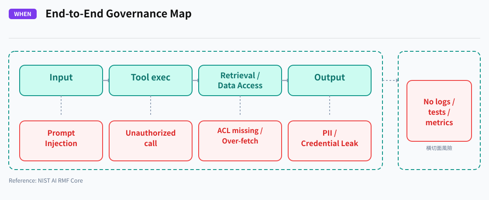
WHICH：六種可以使用的工具 / 機制 / 方法
中央：Agent Governance Tools，分兩大類：
Runtime Enforcement（運行時） ：
• Framework Guardrails（框架層防護）
• Agent Hooks（攔截點）
• MCP / Tools Permission（工具權限）
• LLM / RAG Guardrails（模型/RAG 防護）
• Policy As Code
• Testing / Red Team
對應：治理地圖（WHEN）告訴你哪裡有風險；這張（WHICH）告訴你用什麼工具 — 左欄=執行期攔截，右欄=上線前驗證
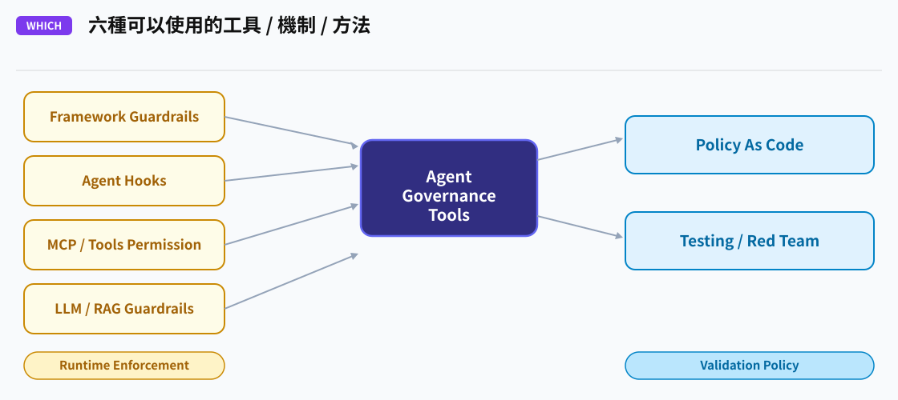
DEMO：Policy as Code（OPA/Rego 風格，示意語法非逐字）
核心：default-deny 正面表列 + ABAC 三態決策 (allow / deny / require_approval)
示範案例：admin 寄信到外部 domain → 不硬擋也不放行，升級 require_approval （人工核准）— 比單純 allow/deny 更貼真實情境
落地三要求：版本控管 + PR review／搭配測試／稽核性
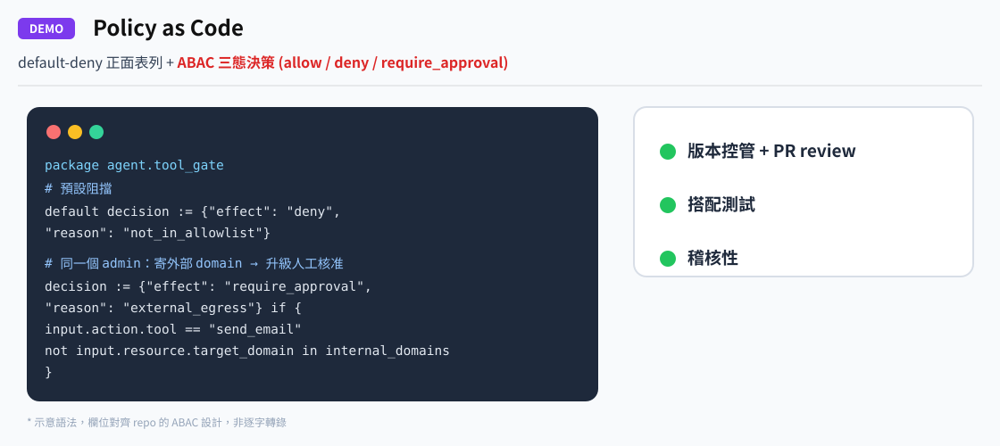
心得（Yuga）：Policy as Code 放置位置的取捨
講者放在 Agent Hooks，但其實也可放 MCP 或 LLM Gateway，放哪決定看得到什麼：
Agent Hooks ：看得到任務意圖＋動作鏈上下文；缺點＝綁框架，換框架要重寫MCP / Tools Permission ：工具層是標準介面，一次實作多個 agent 共用；但只看得到單一 tool call，看不到背後意圖LLM Gateway ：橫切面攔截所有 LLM 流量（PII 遮罩、prompt injection 偵測）；但離動作最遠，管不到 tool 執行結果本質 trade-off：越靠近模型，看得到 prompt 但看不到動作鏈；越靠近工具，看得到調用但看不到意圖
實務：分層防禦 — Gateway 擋輸入污染、Hooks 做意圖決策、MCP 層做權限白名單
TAKEAWAYS 總結
• 治理要發生在動作前 （事前攔截，不是事後補救）
• 治理工程化：Policy as Code （治理本身要版本化、可測試、可稽核）
• 治理是否有效：用測試 + 觀測驗證 （治理也要被驗證，呼應 Session 4「更多的測試≠信心」）
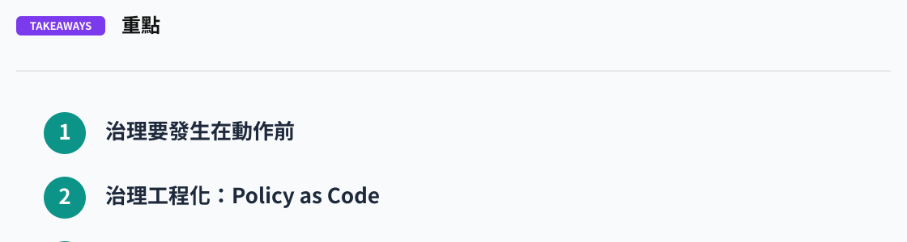
11. 讓 AI 不只回答，更能完成工作：企業 AI 工作流程的落地實務 — Tony Chung
16:20–16:50
背景（官網摘要，session/4946）
主軸：企業如何讓 AI 從「回答問題的工具」變成「協助完成工作、提升效率、降低風險」的新型營運能力
內容五段：
• 企業 AI 的下一步 ：從回答問題到完成工作 — 聊天型 AI 的限制，企業真正需要的是能支援工作流程的 AI 能力
• AI 如何提升工作效率 ：文件分析、供應商評估、採購比價等情境 — 減少人工整理、比對與確認成本
• 導入方法 ：先建立可信知識基礎 → 再逐步導入文件處理、任務執行、跨系統協作
• 上線前的管理要求 ：權限、安全、紀錄、審核、維運 — AI 要被信任、被管理、被追蹤
• 可持續擴展的企業 AI 工作平台 ：分階段導入路線，從單一應用走向可治理、可維運、可擴展
聽眾收穫核心：企業 AI 的價值不在擁有多少工具，而在能否把 AI 安全、穩定地放進實際業務流程
難度：通識 / 中文 / TAG：Agentic Workflows、Agent Governance
03 現實落差：幫我找答案，與幫我完成工作，差在哪裡？
副標：真正的企業工作，通常不是一次問答，而是一個可追蹤、可驗證、可交付的流程
場景：採購主管交辦 — 50 份不同格式供應商報價單 → 整理成比較表、找出異常項目、評估風險、提供建議名單
對比：
Chatbot 一次問答 企業工作系統 逐份上傳文件 批次匯入文件 得到一段分析文字 結構化欄位擷取 缺乏任務狀態 規則驗證與異常標註 沒有批次處理能力 風險評分 → 輸出 Excel / ERP 任務 ❌ 無法形成可重跑流程 ✅ 可重跑
關鍵差異金句：企業真正需要的不是一段回答，而是一份可驗證、可交付、可追溯的工作成果
心得：差別不在 AI 聰不聰明，在有沒有把工作當流程做 — 批次、結構化、驗證、輸出格式，全是工程問題不是模型問題（與 Session 3 SDD「流程切成有明確產出/驗收的步驟」同頻）
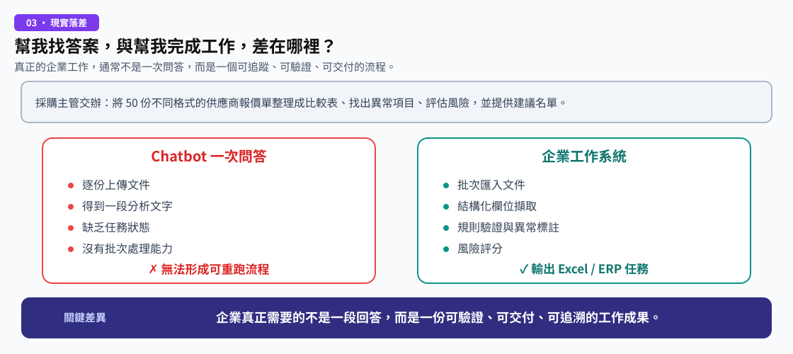
06 參考架構：企業 Agentic Workflow 的五層設計
• Model & Infrastructure — Cloud / Private Cloud / On-prem
• Knowledge & Data — Document / Image / Database
• Tool — ERP / Database / API
• Agent — Knowledge / Work / Personal（三種 agent 角色）
• Experience — Portal / Teams / Desktop
兩側垂直切面：
Governance ：Identity → Permission → Approval → AuditAgentOps ：Cost → Quality → Reliability → PerformanceReference Implementation（華電自有產品）：UpGPT （Knowledge Platform）／WorkAgent （Workflow Engine）／UpAgent （Autonomous Agent）
金句：模型只是其中一層；正式上線取決於資料、工具、狀態、權限與可觀測性
心得：把「Agentic Workflow ≠ 模型」講得很清楚 — 上線門檻在五層齊備＋兩側治理/維運；與 GAIA 治理切面、Session 10 可觀測性對齊
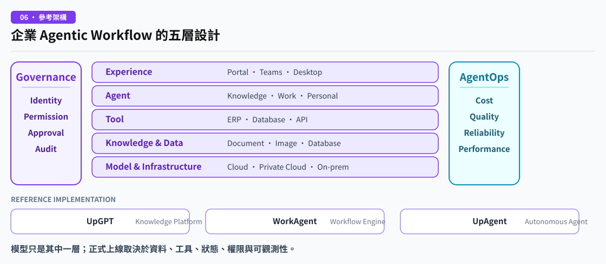
07 Knowledge Implementation：可信知識中樞如何落地
三張卡片（知識中樞三要求）：
可查 FINDABLE — 多格式、多模態、Hybrid Retrieval可驗 VERIFIABLE — 引用來源、頁碼、原文回溯可控 GOVERNABLE — 使用者、群組、資源與租戶權限架構選項：Cloud / Private Cloud / On-Prem — 依資料敏感度選擇不同後端
心得：知識中樞設計基準不是「RAG 效果多好」，是三個 -able：找得到（多模態混合檢索）、驗得到（引用可回溯原文）、管得住（租戶級權限）；「可驗」若無頁碼/來源回溯，就只是 LLM 在編故事
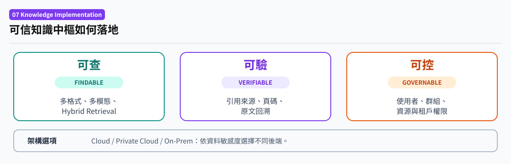
10 Work Agent 架構：表格即流程、欄位即工具
核心：表格即流程、欄位即工具 — Flow Engine 解析欄位相依性，建立可平行、可追蹤、可重跑的執行流程
流程五步：Extract → Normalize → Validate → Score → Export （圖例：流程依賴 / 平行執行 / 失敗重跑）
實例：發票處理 AI 代理（SAP）— 讀取資料夾發票 PDF，表格逐列產出：發票、供應商、統編、品項內容、標註、驗證 SAP PO
Workflow 能力 ：多文件並行處理
單一 Cell 失敗隔離（一行掛了不影響整張表）
失敗重跑
原文溯源追蹤（回 PDF 原文）
心得：設計精髓是把 agent 工作結果落在表格 ，每個 cell 是執行單元 — 欄位相依性 = 流程 DAG，可平行/重跑/追蹤；這其實是 spreadsheet 版的 data pipeline （Extract/Normalize/Validate = ETL），表格 UI 讓每一步都看得見；呼應 03「可驗證、可交付、可追溯」
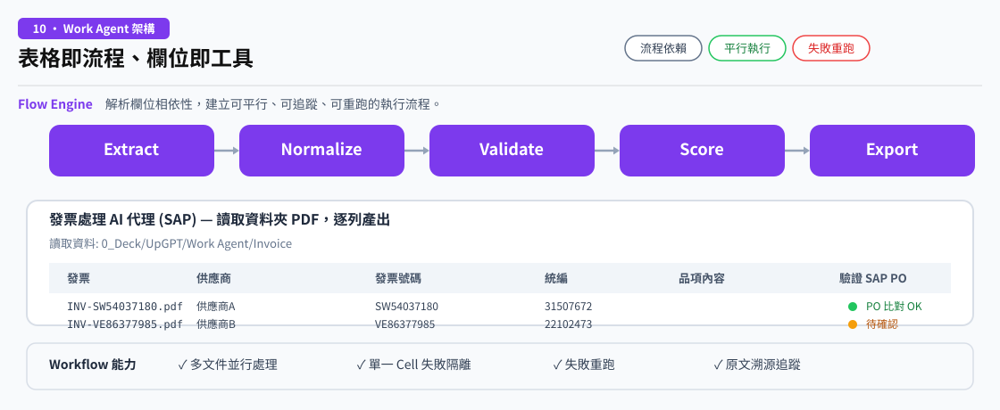
15 Roadmap & 結語：從知識到可治理的 Agent Platform
四階段路線圖：
L1 Knowledge Foundation （UpGPT）— RAG 是基礎，不是終點 → 知識庫 RAG / 引用來源L2 Document Workflow （WorkAgent）— 不同任務需要不同 orchestration → 文件流程 / 自動輸出L3 Domain / Personal Agent （UpAgent）— Agent 的價值在 Workflow，而不是聊天 → 自主規劃 / 多工具協作L4 Governed Platform （Governed）— 治理與可觀測性決定能否正式上線 → 權限治理 / 可觀測性結語金句：AI 的下一步，不是更會聊天，而是更能完成工作。
Progression：Knowledge → Workflow → Agent → Governed Platform
心得：四階梯每一階都是今天其他講者的主題（L1=Session 8 iSearch、L2=Session 3 SDD、L3=Session 2、L4=Session 9/10）— 這張其實是整個 AADay 的濃縮版 roadmap
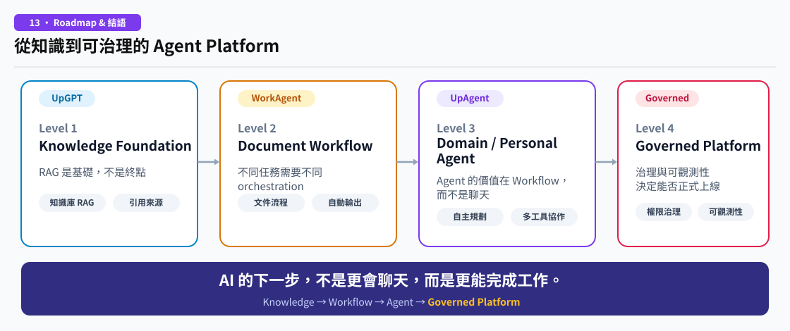
12. 從 CIO 大調查看企業 AI 自動化現況與挑戰 — 王宏仁
17:05–17:35（官網時間，原議程表 16:50）
背景（官網摘要）
講者：王宏仁，iThome 副總編輯
內容：以 iThome CIO 大調查數據，看企業 AI 自動化現況與挑戰
難度：通識 / 中文
7 數位轉型 vs AI 轉型 （引述簡立峰）
數位轉型目標是效率，Work Faster ，把原來的事情做得更快
AI 轉型的目標是智慧，Work Smarter ，讓組織變得更聰明
— 前 Google 台灣董事總經理 簡立峰
心得：數位轉型＝把既有流程加速；AI 轉型＝改變組織做事方式；Session 2 automation 是 Work Faster，Session 11「從回答到完成工作」、Session 6「把專家調查方法工程化」才是 Work Smarter
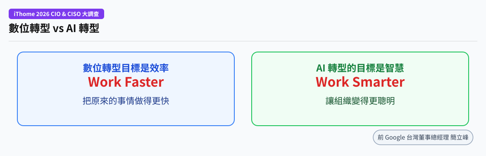
12 各產業 AI 預算金額與成長率（2025→2026，iThome 2026 CIO & CISO 大調查）
金融業：5,198萬 → 11,309萬（+118% 翻倍）
高科技製造業：650萬 → 819萬（+24%）
一般製造業：190萬 → 299萬（+50%）
服務業：822萬 → 852萬（+4%）
醫療業：1,367萬 → 871萬（−36% 唯一衰退）
政府學校：1,103萬 → 2,579萬（+134% 最高）
百億營收企業 Top500：1,798萬 → 3,776萬（+111%）
心得：預算翻倍（金融/政府）＋領先者比率跳升，但落地還在早期 — 錢進來了，正是今天「能 demo ≠ 能上線」的宏觀數據版
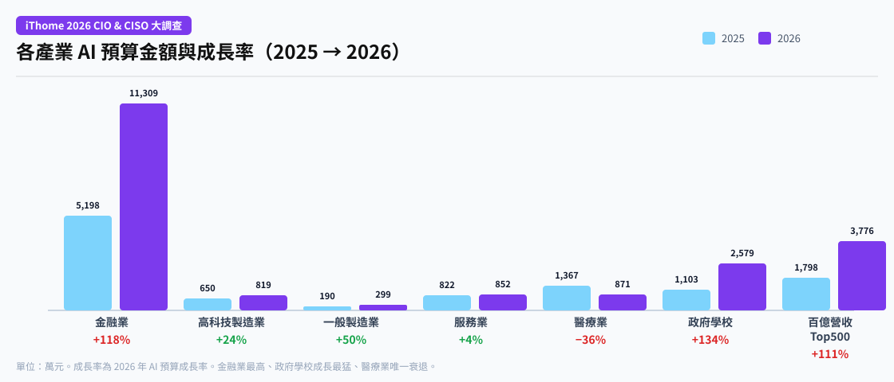
會後心得 / 行動清單
跨 Session 綜效：Agent 生態 ↔ Big Data 生態名詞對應
核心觀察：Agent 生態幾乎把 Big Data 領域 20 年累積的概念全部重新發明一遍，只是對象從「死的資料」變成「活的 Agent」。
Agent 生態 Big Data 對應 本質差異 AgentOps（生命週期/成本/品質） MLOps / ModelOps MLOps 管無狀態模型；AgentOps 管有工具、有狀態、會自主行動的 agent Agent Governance（Policy as Code） Data Governance + ML Governance Data 管存取 （誰能讀寫）；Agent 管行為 （能執行什麼動作、動作鏈合法性、升級人工） 決策軌跡 / 動作鏈稽核 Data Lineage Lineage 追「資料怎麼流」；Agent 稽核追「決策怎麼發生」（意圖+決策過程） Agent 觀測（session/cost/reliability） Data Observability 同樣四件事：成本、品質、可靠度、效能 Agent 測試 / Red Team Data Quality + ML Evaluation 資料管線確定性可重跑；Agent 非確定性 → 從「斷言輸出」變「斷言行為邊界」 MCP / Tool Registry（Marketplace） Feature Store / Data Catalog 資產註冊、重用、版本管理 Agent Contract / capability spec Data Contract 生產者/消費者契約（schema + SLA）
一句話本質差異 ：資料是死的，Agent 是活的 — Data 治理管「過去發生的事」（血緣、品質、事後追），Agent 治理管「正在發生的動作」（即時攔截、行為邊界、事中控）Big Data 沒有對應的新東西：非確定性、副作用、動態委派權限 （user delegation / per-hop zero trust）
橋樑名詞：LLMOps （介於 MLOps 與 DataOps，管 prompt/RAG/evaluation）— Session 10 講者即從 LLMOps 專案延伸
呼應 Session 9 心得：GAIA ↔ lakehouse mapping（Marketplace↔DataHub、Gateway↔Trino、snapshot↔versioning）— 本質都是「資產化治理」，只是資產從 table 變成 agent
• Policy as Code + 三態決策 → 資料存取層 （Session 10）
現況：資料權限大多「給讀就全讀」；套用 agent 的 default-deny 正面表列 + allow / deny / require_approval
require_approval 案例：SELECT * FROM 大表、export 大量列、跨租戶 join、下載 PII 欄位 → 升級人工審核
落地：Trino access control + event listener 接政策引擎（OPA）
• runaway agent → runaway query （Session 5）
沒設 query budget → 掃全表吃爆資源；落地：scan bytes / 執行時間上限 / 自動 kill（Trino resource group / query queue）
• 雙重身份嚴格化 （Session 9，自己標過缺口）
M2M（pipeline service account）vs User Delegation；使用者的 query 不能借用 service account 權限 → Trino impersonation
• AgentOps 四件套 → 資料平台觀測 （Session 11）
Cost（每 query/table 成本、Iceberg 冷熱）、Quality（GE/dbt tests）、Reliability（SLA、失敗率、血緣）、Performance（latency、scan bytes）
既有 fault-lab（iceberg-minio-fault-lab）就是 Reliability 那一格
• 端到端治理地圖 → 資料管線版 （Session 10 NIST）
Input→Tool exec→Retrieval→Output 對應 Ingest→Transform→Store→Serve ：Ingest（未驗證資料進來？）、Transform（權限被放大？）、Store（ACL 漏、over-fetch？）、Serve（PII 漏到 dashboard/export？）
無損轉移的兩個 ：require_approval 三態決策、budget/kill switch — 因為管的是「動作」不是「資產」，資料是死的也能直接用
整體心得（Yuga）
今天的主旋律，三個詞：Workflow → Governance → Observability 上午講 Workflow（怎麼讓 agent 完成工作：SDD、harness、測試策略）
下午講 Governance / Observability（怎麼控管 agent：GAIA、Policy as Code、五層設計）
收尾（Session 12 數據）證明：企業預算大舉投入（金融 +118%、政府 +134%），但落地仍在早期 — 「能 demo ≠ 能上線」是今天最被反覆驗證的一句話 （Session 5 開場、Session 11 L4、Session 12 數據）
治理是 Agent 上線的最後一哩路 ：Session 9（GAIA 資產化生命週期）、Session 10（Policy as Code 三態決策）、Session 11（L4 Governed Platform）三場從平台/工程/產品三個角度講同一件事 — 治理與可觀測性決定能否正式上線人的角色轉移 ：Session 2「從駕駛座到 review 席」+ Session 7「spec 講不清楚，AI 只是在猜你的意圖」→ 把意圖講清楚、定義驗收標準，變成稀缺技能最有收穫的三場 ：Session 9（GAIA 完整企業級治理架構）、Session 10（Policy as Code 具體可抄）、Session 11（「表格即流程」的 Work Agent 設計 — spreadsheet 版的 data pipeline）對自己工作的最大啟發 ：Agent 生態 = Big Data 生態的「活的資產」重製版（見上方對照表）→ lakehouse platform 可以直接借用 require_approval / budget / 資產化生命週期 這三套設計
行動清單
[ ] ① Policy as Code 套資料存取層 ：研究 OPA + Trino access control 整合可行性；設計 default-deny + require_approval（SELECT * FROM 大表 / export 大量列 / PII 欄位 → 升級人工審核）
[ ] ② Query budget 硬上限 ：Trino resource group 設 scan bytes / 執行時間上限 / auto-kill（對應 runaway agent → runaway query）
[ ] ③ 雙重身份嚴格化 ：Trino impersonation 設定，使用者的 query 不能借用 pipeline service account 權限
[ ] ④ 資料平台觀測四件套盤點 ：Cost / Quality / Reliability / Performance 現況 vs 缺口（fault-lab 已是 Reliability 那一格）
[ ] ⑤ 端到端治理地圖套 lakehouse ：Ingest→Transform→Store→Serve 每站風險盤點一次
[ ] ⑥ 看 Spectra / prospec （Session 3/7 的 SDD 工具）：跟自己的 GSD 流程比較，Spectra 的 Park/Worktree 機制可參考
[ ] ⑦ 發展 idea #20 （Agent↔Data 生態對照）：對照表完整化、挑一個 scenario 深入（候選：Policy as Code 套資料層 — 與 ① 合併）
[ ] ⑧ 把「會議照片 → SVG 重繪」流程存成 skill （今天做了 11 張：vision 精讀 → SVG 重繪 → XML 驗證 → 瀏覽器渲染檢查 → 嵌入）
Yuga Chang · AADay 2026
↑ 回到頂部